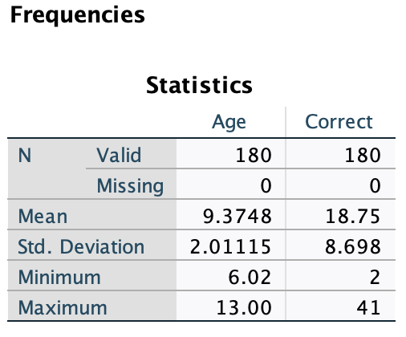

Intro to Today’s Lab
During today’s lab, you’ll apply the concepts discussed during this week’s lecture. Each lab consists of a range of tasks, with corresponding questions you can answer. Please note that the questions are not required and not marked, although they do provide a helpful source of formative feedback that will help you gauge your understanding.
Learning Objectives
At the end of this lab, you will be able to:
- Identify hypotheses which may be tested using ANOVAs
- Check assumptions for a one-way ANOVA
- Use SPSS to perform one-way ANOVAs
- Interpret and report results from one-way ANOVAs
If you also complete the bonus material, you’ll be able to:
- Produce a box-plot to visualise the results from a one-way ANOVA
- Run an appropriate power analysis for both one-way and repeated-measures ANOVAs
- Check assumptions for a repeated-measures ANOVA
- Use SPSS to perform one-way and repeated-measures ANOVAs
- Interpret and report results from repeated-measures ANOVAs
This Week’s Study
You’ll be working with data adapted from studies on emotion recognition (see here). Specifically, you’re testing whether mask-wearing during COVID influenced children’s ability to correctly identify emotions during social interactions. You’ll be investigating this through two separate experiments.
Experiment 1 Overview
In the first experiment, you’ll investigate whether the region
of the face covered affects a child’s ability to recognize emotions
conveyed by facial expressions. You recruited a sample of primary-school
aged children. All participants were presented with photos of people
making stereotypical facial expressions associated with 5 different
emotions (happiness, sadness, fear, anger, disgust). However,
participants were grouped into one of three conditions. Participants in
the first condition viewed unobstructed faces Participants in the second
condition viewed faces wearing sunglasses so that the eyes were
obstructed. Participants in the third condition viewed faces wearing
masks so that the mouth was obstructed (see examples below).

Participants viewed 10 photos per emotion, for a total of 50 photos. Photos were presented in random order for each participant.
You can download the dataset from the first experiment here. It contains the following variables:
| Variable Name | Description |
|---|---|
| ID | Participant ID |
| Gender | Levels: 1 = Female; 2 = Male |
| Age | Age in years |
| Group | Levels: Control; Mouth Obstructed; Eyes Obstructed |
| Correct | Total number of correctly identified emotions; possible scores = 0 - 50 |
Your Tasks
- \(\ \) Identify your independent and dependent variables for this experiment.
- \(\ \) State your research question for this experiment.
- \(\ \) State your hypotheses for this experiment, both using words and statistically.
Click here for a hint
In your research question, you should mention the independent variable, the dependent variable, and the population being studied.
To state hypotheses statistically, you should structure them in the framework of the statistical values being tested.
Click here for the solution
Possible Research Questions:
Does the region of the face being obstructed affect the ability of school-aged children to make emotional inferences?
Do different types of facial coverage impact a child’s ability to correctly identify emotions?
Independent Variable: Region of Face Obstructed (3 levels: Control/Mouth/Eyes)
Dependent Variable: Correct Identifications of Emotion
Hypotheses:
General:
\(H_0:\) Facial obstruction will not affect the ability of school-aged children to make emotion inferences.
\(H_1:\) Facial obstruction will affect the ability of school-aged children to make emotion inferences.
Statistical:
\(H_0: \mu_{control} = \mu_{eyes} = \mu_{mouth}\)
\(H_1:\) at least one \(\mu \neq\) the other \(\mu\)s
Experiment 1 Data Review
Your Tasks
\(\ \) Import ‘Week5LabData1.csv’ into SPSS
\(\ \) Check whether all variables imported into SPSS as the correct measurement type.
\(\ \) Add a key to the
Gendervariable so that 1 = ‘Female’ and 2 = ‘Male’.\(\ \) Check the descriptive statistics of your data
\(\ \) Produce the proper plot to visualise the distribution of your dependent variable,
Correct.
Click here for a hint
For continuous variables, the descriptive statistics you’ll want to check are mean and standard deviation. It’s also useful to check the minimum and maximum so you can easily identify values outside of your expected range. For categorical variables, you’ll check the frequency of participants in each group. It may also be useful to check the mode.
Your dependent variable, Correct, is continuous.
Consider whether either a bar plot or a histogram is more appropriate
for use with continuous variables.
Click here for the solution
Adjust Variable Measure Format
To check that your variables are labeled as the correct scale of measurement, look at the Measure column under the Variable View tab.
ID- OrdinalGender- NominalAge- ScaleGroup- NominalCorrect- Scale
In this instance, SPSS assigned the proper measures by default, so no changes are needed.
Adding Labels
to Variables
To associate a label with each value of a variable, you’ll use the Values column under the Variable View tab.
Select the Gender x Values cell and click the dots to bring up the Value Labels box. Use the \(+\) to add a new label. In the Value column, type the value exactly as it is recorded in your data. In the Label column, add the label you would like to associate with that specific value. Continue adding labels using \(+\) until you’ve labeled all values in the Gender column.

Click ‘OK’. If you’ve done this properly, you’ll see that each numeric value is now associated with a character label.
Check
Descriptive Statistics
Categorical Variables: Your categorical variables
are Group and Gender. Click
Analyze>Descriptive Statistics>Frequencies, then add
these two variables to the ‘Variable(s)’ box. Make sure ‘Display
frequency tables’ is checked, then click ‘OK’. You should see the
following output:

Note that if you set up the labels for the Gender variable properly,
you should see ‘Female’ and ‘Male’ in the frequency table for
Gender, rather than ‘1’ and ‘2’.
Continuous Variables: Your categorical variables are
Age and Correct. Click
Analyze>Descriptive Statistics>Frequencies, then add
these two variables to the ‘Variable(s)’ box. Make sure ‘Display
frequency tables’ is not ticked, then click ‘Statistics’. Tick ‘Mean’,
‘Std. Deviation’, ‘Minimum’, and ‘Maximum’. Click ‘Continue’, then ‘OK’.
You should see the following output:

Produce
Distribution Plot
You can also use Analyze>Descriptive
Statistics>Frequencies to produce a distribution plot. Add
Correct to the ‘Variable(s)’ box, then click ‘Charts’. As
Correct is a continuous variable, you will visualise it
using a histogram. Click ‘Histogram’, then tick ‘Show normal curve on
histogram’. Click ‘Continue’ and then ‘OK’.

Here, you can have a look at your dependent variable’s distribution. There are no concerning outliers or unusual values, so you can move forward with assumptions checks.
Experiment 1 Assumptions
The requirements/assumptions of a One-Way ANOVA are:
Normality: Values are normally distributed within levels
Independence of Observations: Individual observations should not be dependent upon any others
Homogeneity of Variance: Variances within each level should be generally similar
The dependent/outcome variable must be continuous and the independent/predictor variable must be categorical
Your Tasks
\(\ \) Decide whether your data meet the assumption of normality
\(\ \) Decide whether your data meet the assumption of independence
\(\ \) Decide whether your data meet the assumption of homogeneity
Click here for a hint
Have a look at the lecture slides if you’re lost. Because normality must be tested within levels, you should use Analyze>Descriptive Statistics>Explore to get the plots you need.
Click here for the solution
To check the assumptions of normality and homogeneity, click Analyze > Descriptive Statistics > Explore and add your dependent variable to the ‘Dependent List’ box and your independent variable to the ‘Factor List’ box. Click the ‘Plots’ button on the right. Under ‘Boxplots’, select ‘None’, under ‘Descriptive’, tick ‘Histogram’, and tick ‘Normality plots with tests.’ Under ‘Spread vs Level with Levene Test’, click ‘Power Estimation’

Click ‘Continue’ and then ‘OK.’
Normality
Have a look at the histograms and Q-Q Plots.
Remember that normally distributed data will be primarily clustered around the mean, with ends tapering off on either side. The histograms show that the data generally follow this pattern across the levels:

However, they are perhaps very slightly flatter than would be expected, so the Q-Q plots can help bolster our confidence that the data are sufficiently normally distributed:


Here you can see that the points follow the diagonal pretty closely, so we’ll consider the data to have met the normality assumption.
Independence
Assessing independence requires you to have an understanding of the conditions under which your data were collected. The study design (between-participants) increases the likelihood that the observations are independent of each other, so you can consider this assumption to be met.
Homogeneity of Variance
Find the box in the output labeled ‘Test of Homogeneity of Variance’ and check the row labeled ‘Based on Mean’. If Levene’s statistic is not significant, we can assume that our data meet the homogeneity of variance assumption. Here, the \(p\)-value is greater than the threshold of .05, so this test is not significant.
Experiment 1 Analysis
Experiment 2 Overview
In the second experiment, you investigated whether a mask differentially effects a child’s ability to recognize specific emotions. You recruited a new sample of primary-school aged children. All participants were presented with photos of masked people making stereotypical facial expressions associated with 5 different emotions (happiness, sadness, fear, anger, disgust). All participants viewed 50 photos per emotion. Photos were presented in random order for each participant.
You can download the dataset from the second experiment here. It contains the following variables:
| Variable Name | Description |
|---|---|
| ID | Participant ID |
| Gender | Levels: 1 = Female; 2 = Male |
| Age | Age in years |
| Happiness | Total number of correctly identified photos where the subject was emoting happiness; possible scores = 0-50 |
| Sadness | Total number of correctly identified photos where the subject was emoting sadness; possible scores = 0-50 |
| Fear | Total number of correctly identified photos where the subject was emoting fear; possible scores = 0-50 |
| Anger | Total number of correctly identified photos where the subject was emoting anger; possible scores = 0-50 |
| Disgust | Total number of correctly identified photos where the subject was emoting disgust; possible scores = 0-50 |
State Your Hypotheses
Task 1 Here
- Identify IV & DV
- State Hypotheses for One Way, Between-Subjects, and RM ANOVA
Click here for a hint
Hint Goes Here
Click here for the solution
Solution Goes Here
Check Assumptions
Task Description Here
Click here for a hint
Hint Here
Click here for the solution
Solution here.
Compute Descriptive Data
Task Here.
Click here for a hint
Hint Here
Click here for the solution
Solution here.
Data Visualisation
Task Here
Click here for a hint
Hint Here
Click here for the solution
Solution here.
Repeated Measures ANOVA
Task here.
Click here for a hint
Hint Here
Click here for the solution
Solution here.
Compute Effect Sizes
Task here.
Click here for a hint
Hint Here
Click here for the solution
Solution here.
Interpret & Report
Task here.
Click here for a hint
Hint Here
Click here for the solution
Solution here.
Bonus Material: Visualise results (boxplot)
Bonus Material: Repeated-Measures ANOVA
Bonus Material: Power Analysis
Recall the effect size measure for ANOVA, \(\eta^2\):
| Variable Name | Magnitude of \(\eta^2\) |
|---|---|
| Weak | 0.01 |
| Moderate | 0.06 |
| Strong | 0.14 |
Your Task
- \(\ \) Run a power analysis using \(\alpha\) = .05 and power = .8 to determine the sample size necessary to detect a moderate effect size ( \(\eta^2\) = .06) using a One-Way ANOVA. Note that WebPower uses \(f\) as its measure of effect size for ANOVA, so you’ll need to convert \(\eta^2\) to \(f\) before running the power analysis. You can do this with the following equation:
\[f = \sqrt{\frac{\eta^2}{1-\eta^2}}\]
Click here to use WebPower to run your analysis.
Click here for a hint
Unlike the power analysis for \(t\)-tests, this power analysis
requires/outputs the total number of participants, rather than the
number of participants per group.
If you’re completely lost, you might find the section on One-Way ANOVA in the WebPower manual helpful.
Click here for the solution
Navigate to the WebPower site and click One-Way ANOVA:

Number of groups refers to the number of levels in your
independent variable. In this case, you have 3 (Control/Eyes
Obstructed/Mouth Obstructed). You’ll leave the Sample Size option blank,
as that’s the value you want to calculate. To compute the effect size,
\(f\), you’ll do the following:
\[f = \sqrt{\frac{.06}{1-.06}} = .25\] You can enter in the appropriate values for \(\alpha\) and power. When you’re finished, click ‘Calculate’ and you should see the following results if you’ve entered everything properly:
You’ll obviously need a whole number of participants, so you should round up. To detect the desired effect with the given constraints, you need 158 participants.